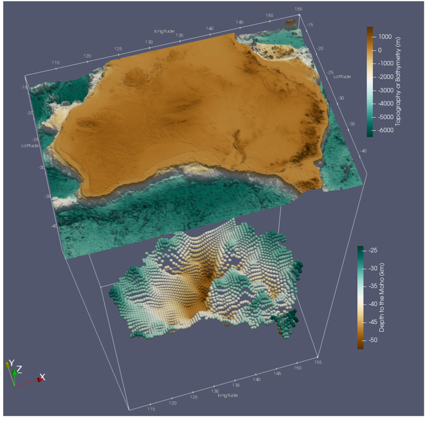

AuSeis: A seismic model from the inversion of teleseismic coda autocorrelation
How to acknowledge AuSeis data ?
If you find the AuSeis results useful, please acknowledge AusPass and use the complete AuSeis reference, including the doi. An example of adequate acknowledgments can be found on our
data policy page. The AuSeis product is under a
Attribution-ShareAlike 4.0 International (CC BY-SA 4.0) license. For more information about AuSeis, please contact Dr Mehdi Tork Qashqai at:
Mehdi.Torkqashqai@csiro.au.
Reference: T. Qashqai, M., Saygin, E., and Kennett, B.L.N. (2019), Crustal Imaging with Bayesian Inversion of Teleseismic P‐wave Coda Autocorrelation, J. Geophys. Res. Solid Earth, 124,
https://doi.org/10.1029/2018JB017055

Topography of Australia (top) and the Moho surface estimated from the inversion (bottom) are visualised in a 3-D view.
AuSeis makes use of the teleseismic waveforms recorded on the vertical components of 1200 permanent and temporary seismic stations across Australia. It includes the first-order estimates of the crustal Vp, Vs, Vp/Vs, density and Moho depth. It has been obtained by inverting the autocorrelations of teleseismic P-wave coda through a Markov Chain Monte Carlo approach. For further details, please refer to the paper referenced above (https://doi.org/10.1029/2018JB017055).
Access data
Description of the dataset:
The results of the inversion are provided as ASCII files (.dat and .xyz files). The zip file containing the results includes the following:
- “Best_2000_Models” includes the best 2000 accepted 1-D models for each seismic station. The models give the thickness, depth, Vp, Vs and Vp/Vs of each crustal layer. For each station, the best 2000 accepted horizontal slowness value (s/km) are also given in the last column of each file. This parameter can be particularly useful to create synthetic seismograms associated with each of the models provided in the files.
- “1-D Models” includes the average of 1-D crustal properties (Vp, Vs, density, depth, Vp/Vs, and Moho) and their associated one sigma uncertainty for each seismic station. The mean and one sigma uncertainty for each of the crustal properties are calculated from the best 2000 accepted models.
- “AuSeis_Crustal_Model” includes an ASCII grid file (“AuSeis_Crustal_Model.xyz”). The file includes grids of seismic crustal properties (Vp, Vs, Vp/Vs, density) and their related one sigma uncertainties. The grid interval in the x and y directions is 0.5 degree, and the depth interval is 5 km. More information about the columns are provided in the file at the top of the file.
- “AuSeis_Moho” includes a file (“AuSeis_Moho_From_1D_Models.dat”) containing Moho depths and their one sigma uncertainty.
- “Stations_Used.dat” is a list of all stations used in this study. The file is organised with the following format: name of the seismic station, name of the seismic network, longitude (degree), and latitude (degree).